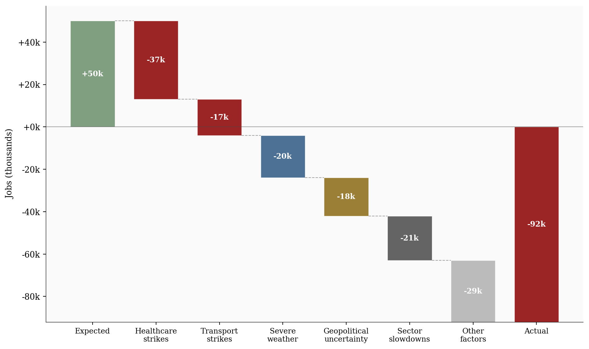
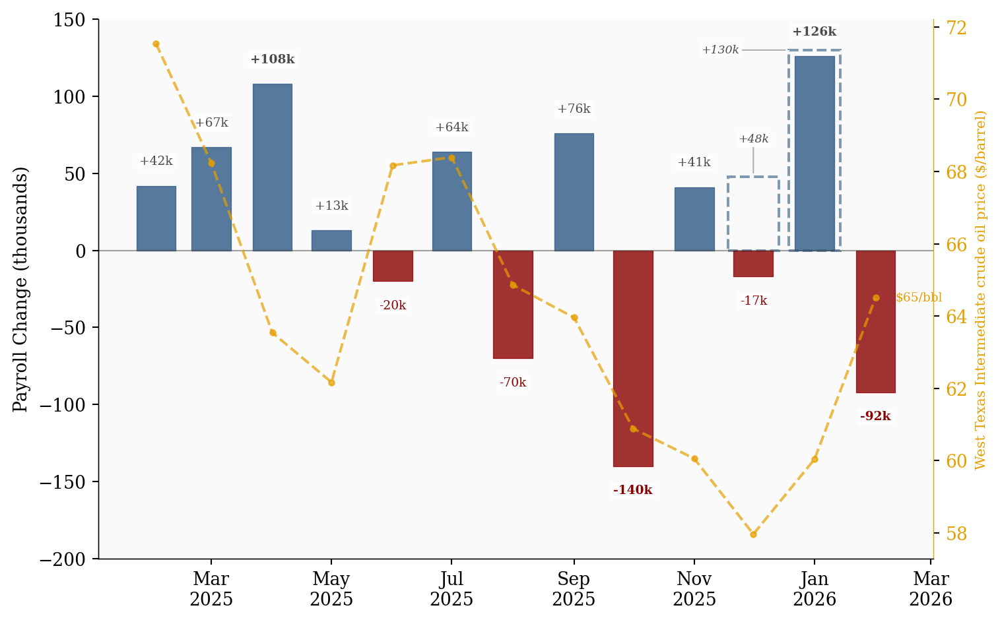
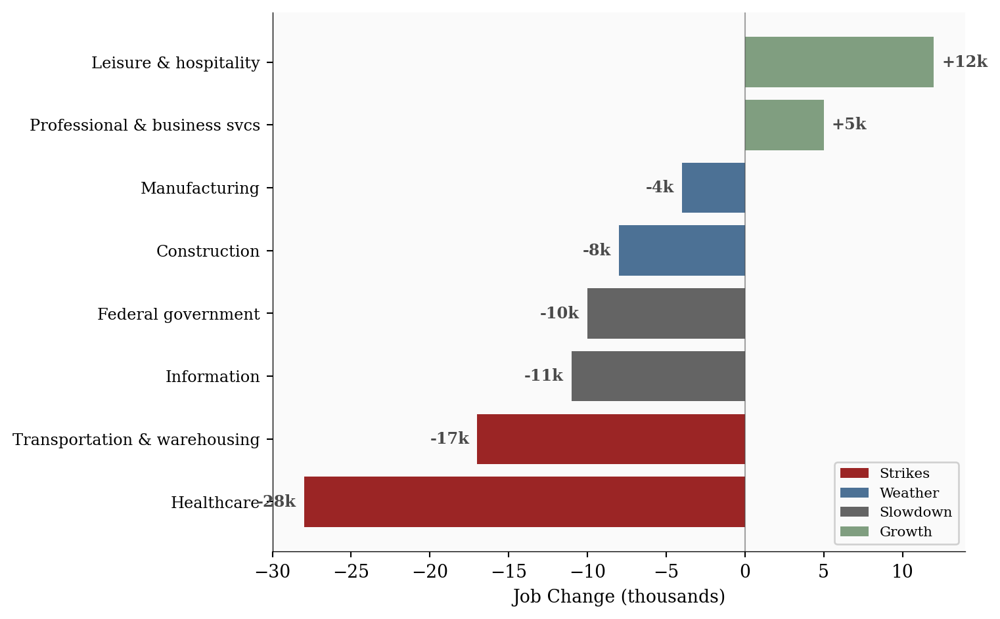

5 Key Metrics
-92,000
Nonfarm Payrolls
4.4%
Unemployment Rate
$37.32
Avg Hourly Earnings
7.9%
U-6 Rate
62.0%
Labor Force Participation
Data as of February 2026 | Source: Bureau of Labor Statistics
The US economy lost 92,000 jobs in February, the worst monthly reading since late 2025. What happened?
March 8, 2026
The US labor market delivered its worst monthly reading since October 2025: -92,000 nonfarm payroll jobs in February 2026, against a consensus expectation of +50,000. The unemployment rate ticked up to 4.4% from 4.3%. Prior months were revised sharply: January to +126,000 and December to -17,000. A miss of -142,000 jobs from consensus doesn’t happen without compounding forces. Three hit simultaneously: labor strikes gutted healthcare and transportation, severe winter storms suppressed construction and manufacturing, and geopolitical uncertainty from the US-Iran conflict froze hiring plans across sectors exposed to energy costs and global supply chains. Still, the underlying picture showed resilience: wages climbed +0.4% to $37.32/hour, keeping real wage growth positive, and the broader U-6 underemployment rate fell to 7.9%, extending a three-month decline from its 8.7% peak in November 2025.
This analysis combines data from two sources. Monthly payroll time-series and oil prices are fetched from FRED (Federal Reserve Economic Data). Sector-level employment changes, revisions, and the waterfall decomposition are drawn from the BLS Employment Situation Summary released March 7, 2026. The waterfall chart represents an analytical decomposition; individual factor contributions are approximations based on sector data and cannot be mechanically separated due to overlapping effects.
Data as of February 2026 | Source: Bureau of Labor Statistics
The gap between expectation and reality was -142,000 jobs. That kind of miss doesn’t come from one bad sector. It takes a convergence of shocks, and February delivered exactly that.
The waterfall below decomposes the distance from the +50,000 consensus forecast down to the actual -92,000 print. Strikes in healthcare and transportation account for the single largest drag, followed by weather-related suppression and a broader pullback tied to geopolitical uncertainty.
# =============================================================================
# Waterfall Chart: Decomposing the Jobs Miss
# =============================================================================
wf = df_waterfall.copy()
# Replace literal \n in labels with actual newlines
wf['label'] = wf['label'].str.replace(r'\\n', '\n', regex=True)
# Compute floating bar positions
running = 0
bottoms = []
heights = []
for _, row in wf.iterrows():
if row['bar_type'] == 'start':
bottoms.append(0)
heights.append(row['value'])
running = row['value']
elif row['bar_type'] == 'net':
# Net bar goes from 0 down to the net value
bottoms.append(min(0, row['value']))
heights.append(abs(row['value']))
else:
# Step: negative values hang down from the running total
new_running = running + row['value']
bottoms.append(min(running, new_running))
heights.append(abs(row['value']))
running = new_running
# Color mapping
factor_colors = {
'baseline': COLORS['positive'],
'strikes': COLORS['strikes'],
'weather': COLORS['weather'],
'uncertainty': COLORS['uncertainty'],
'slowdown': COLORS['slowdown'],
'other': COLORS['light'],
'net': COLORS['accent'],
}
colors = [factor_colors[f] for f in wf['factor']]
fig, ax = plt.subplots(figsize=(10, 6))
bars = ax.bar(range(len(wf)), heights, bottom=bottoms, color=colors, alpha=0.85,
edgecolor='white', linewidth=0.5, width=0.7)
# Connector lines between bars
running = 0
for i in range(len(wf) - 1):
if wf.iloc[i]['bar_type'] == 'start':
running = wf.iloc[i]['value']
y = running
elif wf.iloc[i]['bar_type'] == 'step':
running += wf.iloc[i]['value']
y = running
else:
continue
if wf.iloc[i + 1]['bar_type'] != 'net':
ax.plot([i + 0.35, i + 0.65], [y, y], color=COLORS['neutral'],
linewidth=0.8, linestyle='--', alpha=0.5)
# Value labels
for i, (_, row) in enumerate(wf.iterrows()):
val = row['value']
label = f"{val / 1000:+.0f}k" if row['bar_type'] != 'start' else f"+{val / 1000:.0f}k"
y_pos = bottoms[i] + heights[i] / 2
ax.text(i, y_pos, label, ha='center', va='center', fontsize=9,
fontweight='bold', color='white')
# Zero reference line
ax.axhline(y=0, color=COLORS['neutral'], linewidth=0.8, alpha=0.5)
ax.set_xticks(range(len(wf)))
ax.set_xticklabels(wf['label'], fontsize=9)
ax.yaxis.set_major_formatter(ticker.FuncFormatter(lambda x, _: f"{x / 1000:+.0f}k"))
ax.set_ylabel('Jobs (thousands)')
plt.tight_layout()
plt.show()
The decomposition is approximate; these forces don’t operate in clean isolation. Strike-affected sectors may also have been hit by weather, and uncertainty compounds every category. But the directional story is clear: without strikes, February likely would have been modestly negative rather than catastrophic.
February’s print didn’t materialize out of nowhere. The payroll trend has been volatile for months, with sharp swings driven by seasonal quirks, revision noise, and episodic disruptions. The chart below places the February miss in the context of the past fourteen months.
# =============================================================================
# Payroll Trend with Oil Price Overlay
# =============================================================================
df_plot = df_payrolls[['payroll_change', 'payroll_change_previous']].dropna(
subset=['payroll_change']
).copy()
fig, ax1 = plt.subplots(figsize=(8, 5))
label_bbox = dict(facecolor='white', edgecolor='none', alpha=0.7, pad=1.5)
BASE_OFFSET = 12 # min gap from bar top to label bottom (~1.5x font height)
# ── Draw bars ────────────────────────────────────────────────────────────────
for date, row in df_plot.iterrows():
val = row['payroll_change']
prev = row.get('payroll_change_previous', float('nan'))
has_prev = pd.notna(prev)
if has_prev:
prev = float(prev)
# Dashed outline at previous estimate level (wider, hollow)
prev_color = COLORS['accent'] if prev < 0 else COLORS['primary']
ax1.bar(date, prev, width=26, facecolor='none', edgecolor=prev_color,
linewidth=1.5, linestyle='--', alpha=0.6)
# Solid bar at current/revised estimate
cur_color = COLORS['accent'] if val < 0 else COLORS['primary']
ax1.bar(date, val, width=20, color=cur_color, alpha=0.8,
edgecolor=cur_color, linewidth=0.5)
else:
# Non-revised months: single solid bar
color = COLORS['accent'] if val < 0 else COLORS['primary']
ax1.bar(date, val, width=20, color=color, alpha=0.8,
edgecolor=color, linewidth=0.5)
# ── Value labels ─────────────────────────────────────────────────────────────
for date, row in df_plot.iterrows():
val = row['payroll_change']
prev = row.get('payroll_change_previous', float('nan'))
has_prev = pd.notna(prev)
# Current estimate label (shown for every month)
offset = BASE_OFFSET if val >= 0 else -BASE_OFFSET
va = 'bottom' if val >= 0 else 'top'
ax1.text(date, val + offset, f"{val:+.0f}k", ha='center', va=va,
fontsize=7, fontweight='bold' if abs(val) > 80 else 'normal',
color=COLORS['accent'] if val < 0 else COLORS['neutral'],
bbox=label_bbox)
# Previous estimate: side annotation with leader line (revised months only)
if has_prev:
prev = float(prev)
# December: place above the dashed outline to avoid confusion with Nov
if prev > 0 and val < 0:
ax1.annotate(
f"{prev:+.0f}k",
xy=(date, prev),
xytext=(0, 18), textcoords='offset points',
fontsize=6.5, fontstyle='italic', color=COLORS['neutral'],
ha='center', va='bottom',
bbox=label_bbox,
arrowprops=dict(arrowstyle='-', color=COLORS['light'],
lw=0.8, shrinkA=0, shrinkB=2))
else:
ax1.annotate(
f"{prev:+.0f}k",
xy=(date - pd.Timedelta(days=13), prev),
xytext=(-28, 0), textcoords='offset points',
fontsize=6.5, fontstyle='italic', color=COLORS['neutral'],
ha='right', va='center',
bbox=label_bbox,
arrowprops=dict(arrowstyle='-', color=COLORS['light'],
lw=0.8, shrinkA=0, shrinkB=2))
ax1.set_ylabel('Payroll Change (thousands)')
ax1.axhline(y=0, color=COLORS['neutral'], linewidth=0.8, alpha=0.5)
# ── Oil price on secondary axis ──────────────────────────────────────────────
if len(df_oil) > 0:
ax2 = ax1.twinx()
oil_aligned = df_oil.reindex(df_plot.index, method='nearest')
oil_color = '#E69F00' # Colorblind-friendly orange
ax2.plot(oil_aligned.index, oil_aligned['wti_price'], color=oil_color,
linewidth=1.5, linestyle='--', alpha=0.7, marker='o', markersize=3)
ax2.set_ylabel('West Texas Intermediate crude oil price ($/barrel)',
color=oil_color, fontsize=8)
ax2.tick_params(axis='y', labelcolor=oil_color)
ax2.spines['right'].set_visible(True)
ax2.spines['right'].set_color(oil_color)
ax2.spines['right'].set_linewidth(0.5)
# End label for oil
last_oil = oil_aligned['wti_price'].dropna().iloc[-1]
last_date = oil_aligned['wti_price'].dropna().index[-1]
ax2.text(last_date + pd.Timedelta(days=10), last_oil,
f'${last_oil:.0f}/bbl', fontsize=7, color=oil_color,
ha='left', va='center')
# Format x-axis
ax1.xaxis.set_major_formatter(mdates.DateFormatter('%b\n%Y'))
ax1.xaxis.set_major_locator(mdates.MonthLocator(interval=2))
# ── Adjust y-axis to give room for labels below the lowest bar ───────────────
ax1.set_ylim(bottom=-200, top=150) # fixed scale to -200 to +150k for better label display
plt.tight_layout()
plt.show()
The revisions complicate the narrative. January was revised up sharply to +126,000, while December was revised down to -17,000. The net effect of revisions over recent months has been modest, but the volatility (swinging from -17,000 to +126,000 to -92,000 in three consecutive months) makes it difficult to distinguish signal from noise. February’s headline is subject to the same revision risk: initial BLS readings have historically been revised by 25,000 to 75,000 jobs.
The February miss wasn’t evenly distributed. A handful of sectors absorbed outsized losses while others continued hiring. The chart below shows job changes by sector, color-coded by the primary driving factor.
# =============================================================================
# Sector Impact: Horizontal Bar Chart
# =============================================================================
df_sec = df_sectors.sort_values('change', ascending=True).copy()
factor_color_map = {
'strikes': COLORS['strikes'],
'weather': COLORS['weather'],
'slowdown': COLORS['slowdown'],
'other': COLORS['positive'],
}
bar_colors = [factor_color_map[f] for f in df_sec['factor']]
fig, ax = plt.subplots(figsize=(8, 5))
bars = ax.barh(range(len(df_sec)), df_sec['change'] / 1000, color=bar_colors, alpha=0.85)
# Value labels
for i, (val, bar) in enumerate(zip(df_sec['change'], bars)):
label = f"{val / 1000:+.0f}k"
offset = 0.5 if val >= 0 else -0.5
ha = 'left' if val >= 0 else 'right'
ax.text(val / 1000 + offset, i, label, va='center', ha=ha, fontsize=9,
fontweight='bold', color=COLORS['neutral'])
ax.set_yticks(range(len(df_sec)))
ax.set_yticklabels(df_sec['sector'], fontsize=9)
ax.set_xlabel('Job Change (thousands)')
ax.axvline(x=0, color=COLORS['neutral'], linewidth=0.8, alpha=0.5)
# Legend
legend_elements = [
Patch(facecolor=COLORS['strikes'], alpha=0.85, label='Strikes'),
Patch(facecolor=COLORS['weather'], alpha=0.85, label='Weather'),
Patch(facecolor=COLORS['slowdown'], alpha=0.85, label='Slowdown'),
Patch(facecolor=COLORS['positive'], alpha=0.85, label='Growth'),
]
ax.legend(handles=legend_elements, loc='lower right', fontsize=8, framealpha=0.9)
plt.tight_layout()
plt.show()
Healthcare, typically among the most reliable job-growth sectors, lost -28,000 jobs in February. The damage was concentrated in California and New York. Kaiser Permanente’s open-ended strike, which began January 26, pulled roughly 31,000 nurses and healthcare professionals off the job across dozens of hospitals and hundreds of clinics in California and Hawaii.1 In New York City, approximately 15,000 nurses were on strike through mid-February, with one hospital’s 4,200-nurse walkout not ending until February 21. Physicians’ offices alone shed -37,000 positions. Smaller actions hit facilities in Nevada and Southern California.
Transportation and warehousing lost -17,000. Domestic courier and delivery services bore the brunt, compounded by mounting logistics disruptions from Middle East shipping route closures following the US-Iran escalation in late February. Carriers suspended routes through the Red Sea and the Strait of Hormuz, rippling through US-bound supply chains.
These are temporary distortions by nature. When strikes resolve, affected workers return and the sector typically snaps back. But the timing amplified the headline shock: both sectors struck in the same month, compounding the drag.
The Northeast blizzard of February 22-24, dubbed Winter Storm Hernando,2 paralyzed the I-95 corridor from Virginia to Massachusetts. New Jersey recorded 30.7 inches, Connecticut 30.8 inches, and parts of New York over 31 inches. More than 600,000 people lost power. Construction sites shut down across the region, and outdoor manufacturing operations ground to a halt. An earlier storm on February 18 disrupted activity in Minnesota and Wisconsin.
Construction lost an estimated -8,000 and manufacturing shed -4,000. Together, weather-related factors account for roughly -20,000 of the total miss. Like strikes, weather effects tend to reverse in subsequent months as delayed projects resume and deferred hiring materializes.
The information sector contracted by -11,000, continuing a multi-month pattern of restructuring. Amazon cut 16,000 positions, Cisco shed 4,200 in February (with another 6,000 announced shortly after), and Meta eliminated roughly 1,500 roles from its Reality Labs division.3 AI was cited as a factor in approximately 4,680 February job cuts across the tech sector.
The federal government shed -10,000 as a congressional pause on federal layoffs expired at the end of February. The D.C. metro area absorbed the bulk of these losses, with legal challenges pending in San Francisco federal court over the scope of workforce reductions. These losses are structural rather than episodic; they won’t automatically reverse when the weather improves or a strike ends.
A parallel undercurrent: surveys indicate that 40% of workers express concern about AI-related job displacement in 2026, a sentiment that may be feeding into weaker job-seeking behavior and contributing to the low 62.0% labor force participation rate.
The headline number was ugly, but several indicators beneath the surface tell a more encouraging story.
Wages continued to climb: +0.4% month-over-month to $37.32/hour, putting year-over-year growth at +3.8%. With headline inflation running below 3%, real wage growth remains positive. Workers who kept their jobs saw purchasing power improve.
The broader underemployment measure (U-6) dropped to 7.9% from 8.1% in January, extending a three-month decline from its 8.7% peak in November 2025. That steady improvement means fewer people are stuck in involuntary part-time work and fewer have given up looking, even as the payroll headline deteriorated. It is one of the clearest signs that the labor market’s underlying health is better than the top-line number suggests.
Leisure and hospitality continued adding jobs, and professional and business services posted modest gains. Employers are still bidding up labor costs even as headline payrolls contract, which suggests the underlying labor market is tighter than the payroll number alone implies.
For the Fed: The combination of weak payrolls and solid wage growth creates a policy dilemma. If February’s miss is largely transitory (strikes plus weather), the labor market may snap back in March and April, making a rate cut unnecessary. If geopolitical uncertainty persists and sector slowdowns deepen, the Fed faces pressure to ease, but elevated wage growth limits how aggressively it can move without reigniting inflation concerns.
For investors: Watch the March report closely. A strong rebound would confirm February as a transitory blip and reinforce the “soft landing” thesis. A second consecutive miss would force a fundamental reassessment of labor market health and shift expectations toward earlier and deeper rate cuts. Oil prices remain the wildcard: if the Iran conflict escalates further, the stagflationary combination of weak growth and rising energy costs could pressure both equities and bonds.
For workers: The headline is alarming, but the details matter. Strike-affected workers will return. Weather-delayed projects will resume. The structural risks (AI displacement anxiety, federal hiring freezes, information sector restructuring) are real but affect specific segments, not the broad labor market. Wage growth remains the most encouraging signal: for most workers, paychecks are still growing faster than prices.
| Series | Description | Source |
|---|---|---|
| PAYEMS | Total Nonfarm Payrolls, SA | BLS via FRED |
| UNRATE | Unemployment Rate, SA | BLS via FRED |
| U6RATE | U-6 Underemployment Rate, SA | BLS via FRED |
| CES0500000003 | Average Hourly Earnings, All Employees, SA | BLS via FRED |
| DCOILWTICO | West Texas Intermediate Crude Oil Spot Price, Daily | EIA via FRED |
| Employment Situation | February 2026 sector-level data, revisions | BLS |
Data current as of March 7, 2026 (February 2026 Employment Situation).
The Kaiser Permanente strike, the largest open-ended healthcare strike in US history, ended after roughly one month with a 21.5% raise for 31,000 workers. See Nurse.org. The NYC nurses strike, involving nearly 15,000 NYSNA nurses, ended after 41 days. See NYSNA.↩︎
Winter Storm Hernando, classified as a bomb cyclone, struck February 22-23 with record snowfall across the Northeast and nearly 600,000 power outages. See Wikipedia.↩︎
Amazon announced 16,000 cuts in a restructuring push toward AI. See CNBC. The congressional moratorium on federal layoffs expired in late February. See Government Executive.↩︎